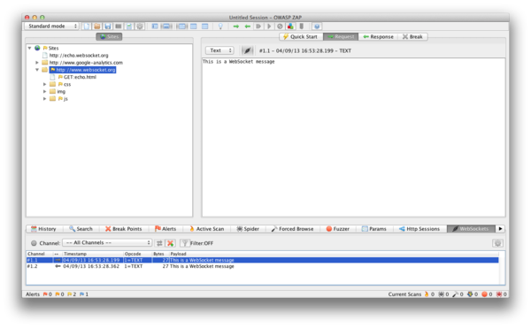
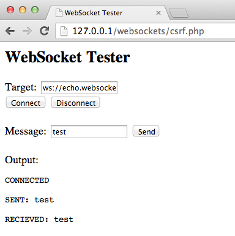

4.12.10 Testing WebSockets (OTG-CLIENT-010)
Summary
Traditionally the HTTP protocol only allows one request/response per TCP connection. Asynchronous JavaScript and XML (AJAX) allows clients to send and receive data asynchronously (in the background without a page refresh) to the server, however, AJAX requires the client to initiate the requests and wait for the server responses (half-duplex).
HTML5 WebSockets allow the client/server to create a 'full-duplex' (two-way) communication channels, allowing the client and server to truly communicate asynchronously. WebSockets conduct their initial 'upgrade' handshake over HTTP and from then on all communication is carried out over TCP channels by use of frames.
Origin
It is the server’s responsibility to verify the Origin header in the initial HTTP WebSocket handshake. If the server does not validate the origin header in the initial WebSocket handshake, the WebSocket server may accept connections from any origin. This could allow attackers to communicate with the WebSocket server cross-domain allowing for
Top 10 2013-A8-Cross-Site Request Forgery (CSRF) type issues.
Confidentiality and Integrity
WebSockets can be used over unencrypted TCP or over encrypted TLS. To use unencrypted WebSockets the
ws:// URI scheme is used (default port 80), to use encrypted (TLS) WebSockets the
wss:// URI scheme is used (default port 443). Look out for
Top 10 2013-A6-Sensitive Data Exposure type issues.
Authentication
WebSockets do not handle authentication, instead normal application authentication mechanisms apply, such as cookies, HTTP Authentication or TLS authentication. Look out for
Top 10 2013-A2-Broken Authentication and Session Management type issues.
Authorization
WebSockets do not handle authorization, normal application authorization mechanisms apply. Look out for
Top 10 2013-A4-Insecure Direct Object References and
Top 10 2013-A7-Missing Function Level Access Control type issues.
Input Sanitization
As with any data originating from untrusted sources, the data should be properly sanitised and encoded. Look out for
Top 10 2013-A1-Injection and
Top 10 2013-A3-Cross-Site Scripting (XSS) type issues.
How to Test
Black Box testing
1. Identify that the application is using WebSockets.
• Inspect the client-side source code for the
ws:// or
wss:// URI scheme.
• Use Google Chrome's Developer Tools to view the Network WebSocket communication.
• Use
OWASP Zed Attack Proxy (ZAP)'s WebSocket tab.
2. Origin.
• Using a WebSocket client (one can be found in the Tools section below) attempt to connect to the remote WebSocket server. If a connection is established the server may not be checking the origin header of the WebSocket handshake.
3. Confidentiality and Integrity.
• Check that the WebSocket connection is using SSL to transport sensitive information (wss://).
• Check the SSL Implementation for security issues (Valid Certificate, BEAST, CRIME, RC4, etc). Refer to the
Testing for Weak SSL/TLS Ciphers, Insufficient Transport Layer Protection (OTG-CRYPST-001) section of this guide.
4. Authentication.
• WebSockets do not handle authentication, normal black-box authentication tests should be carried out. Refer to the
Authentication Testing sections of this guide.
5. Authorization.
• WebSockets do not handle authorization, normal black-box authorization tests should be carried out. Refer to the
Authorization Testing sections of this guide.
6. Input Sanitization.
• Use
OWASP Zed Attack Proxy (ZAP)'s WebSocket tab to replay and fuzz WebSocket request and responses. Refer to the
Testing for Data Validation sections of this guide.
Example 1 Once we have identified that the application is using WebSockets (as described above) we can use the
OWASP Zed Attack Proxy (ZAP) to intercept the WebSocket request and responses. ZAP can then be used to replay and fuzz the WebSocket request/responses.

Example 2 Using a WebSocket client (one can be found in the Tools section below) attempt to connect to the remote WebSocket server. If the connection is allowed the WebSocket server may not be checking the WebSocket handshake's origin header. Attempt to replay requests previously intercepted to verify that cross-domain WebSocket communication is possible.

Gray Box testing
Gray box testing is similar to black box testing. In gray box testing the pen-tester has partial knowledge of the application. The only difference here is that you may have API documentation for the application being tested which includes the expected WebSocket request and responses.
Tools
•
OWASP Zed Attack Proxy (ZAP) -
https://www.owasp.org/index.php/OWASP_Zed_Attack_Proxy_ProjectZAP is an easy to use integrated penetration testing tool for finding vulnerabilities in web applications. It is designed to be used by people with a wide range of security experience and as such is ideal for developers and functional testers who are new to penetration testing. ZAP provides automated scanners as well as a set of tools that allow you to find security vulnerabilities manually.
•
WebSocket Client -
https://github.com/ethicalhack3r/scripts/blob/master/WebSockets.htmlA WebSocket client that can be used to interact with a WebSocket server.
•
Google Chrome Simple WebSocket Client -
https://chrome.google.com/webstore/detail/simple-websocket-client/pfdhoblngboilpfeibdedpjgfnlcodoo?hl=enConstruct custom Web Socket requests and handle responses to directly test your Web Socket services.
References
Whitepapers •
HTML5 Rocks - Introducing WebSockets: Bringing Sockets to the Web:
http://www.html5rocks.com/en/tutorials/websockets/basics/•
W3C - The WebSocket API:
http://dev.w3.org/html5/websockets/•
IETF - The WebSocket Protocol:
https://tools.ietf.org/html/rfc6455•
Christian Schneider - Cross-Site WebSocket Hijacking (CSWSH):
http://www.christian-schneider.net/CrossSiteWebSocketHijacking.html•
Jussi-Pekka Erkkilä - WebSocket Security Analysis:
http://juerkkil.iki.fi/files/writings/websocket2012.pdf•
Robert Koch- On WebSockets in Penetration Testing:
http://www.ub.tuwien.ac.at/dipl/2013/AC07815487.pdf•
DigiNinja - OWASP ZAP and Web Sockets:
http://www.digininja.org/blog/zap_web_sockets.php